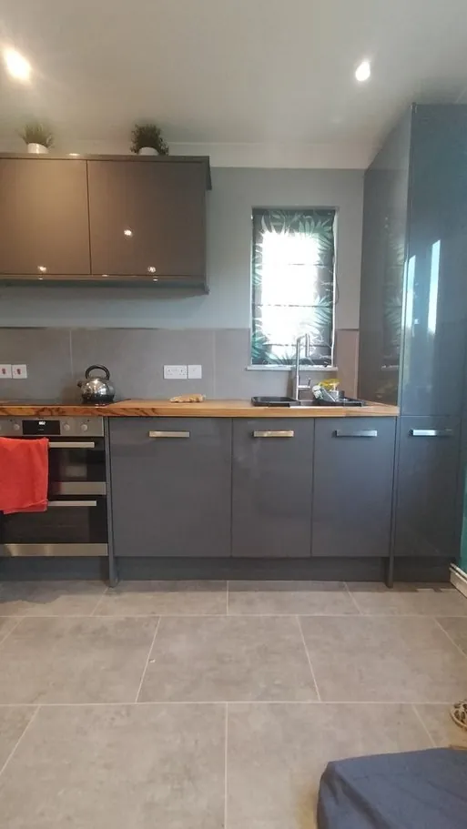
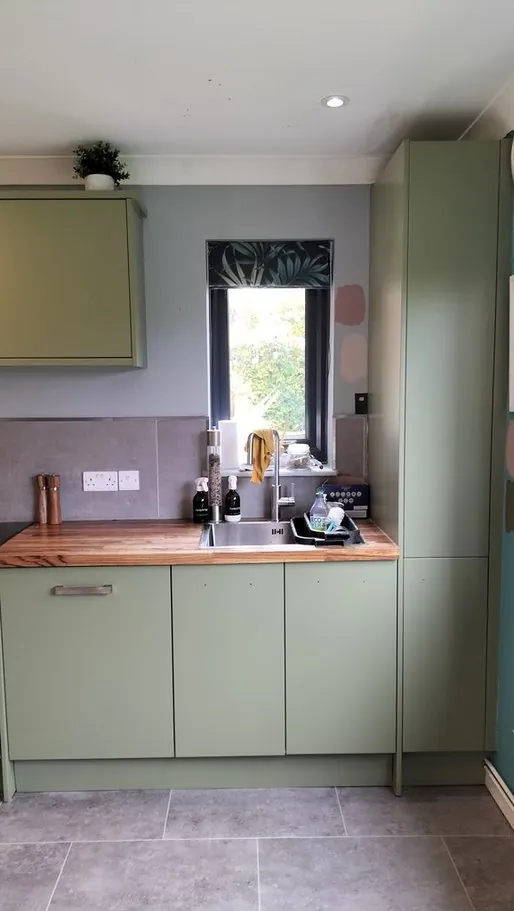

“It’s a Howdens kitchen — can you spray it?” We hear this about every big brand: Howdens, Magnet, IKEA, Wren, B&Q, Wickes and more. The honest answer is that the brand matters far less than the surface of your doors. Every big supplier sells several different door types, and each takes paint differently.
The door surfaces you’re most likely to have
Painted or lacquered timber and MDF
Already-painted doors are usually the most straightforward to respray. After cleaning, repairs and keying, they take new paint very well.
Solid wood and veneer (oak, pine, cherry)
Varnished wood can be sprayed. Oak, pine and cherry kitchens are some of our most dramatic transformations — like this Eastleigh oak shaker kitchen, resprayed mid grey:
 Before
Before After
AfterMelamine, laminate and gloss
Melamine and gloss finishes can be sprayed, but they need thorough preparation and the right primer so the paint grips a surface designed to be wipe-clean. This Hursley kitchen started out in grey gloss:

Before
AfterVinyl-wrapped (foil) doors
Wrapped doors in good condition are a case-by-case job, and peeling wrap has to come off completely first — you can’t paint over it. We’ve written a whole guide to peeling vinyl wrap doors.
How to tell what your doors are made of
- Look at the edges. A smooth, seamless rounded edge with no join usually means vinyl wrap. A thin strip along the edge usually means laminate or melamine with edge banding.
- Look at the back. A plain white or different-coloured back often means a wrapped or laminate door.
- Look at the joints. Fine lines where the frame of a shaker door meets the panel usually mean timber or painted MDF.
- Check your paperwork. If you still have the kitchen’s range name, that tells us exactly what it is.
Not sure? Send us a photo of a door edge and the back of a door through our online quote form and we’ll tell you.
Why a respray suits big-brand kitchens
Most kitchens from the big suppliers are well built, with sound carcasses and a layout that still works. Often the only thing wrong is the colour or a dated finish. Respraying keeps everything you paid for and changes what you see — for up to 75% less than replacing it.
Kitchen Decorators is an independent kitchen respray company and isn’t affiliated with any of the brands mentioned here.
We work in Hampshire only
We’re a local, family-run team based near Botley, so we only take on kitchens in Hampshire and just over its borders — Winchester, Southampton, Eastleigh, Chandler’s Ford, Hedge End, Romsey, Andover, Basingstoke, Alton, Petersfield, Fareham, Waterlooville and the villages in between.
If you’re further afield, we’re sorry we can’t help — but everything in this guide still applies when you choose a local specialist near you.